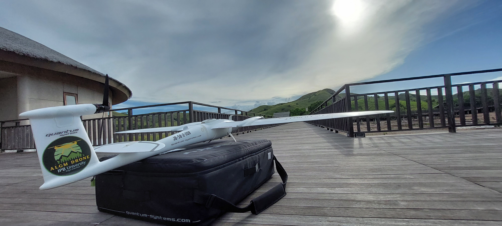
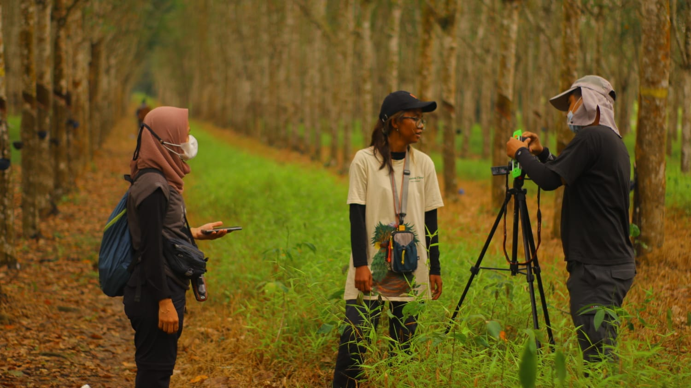
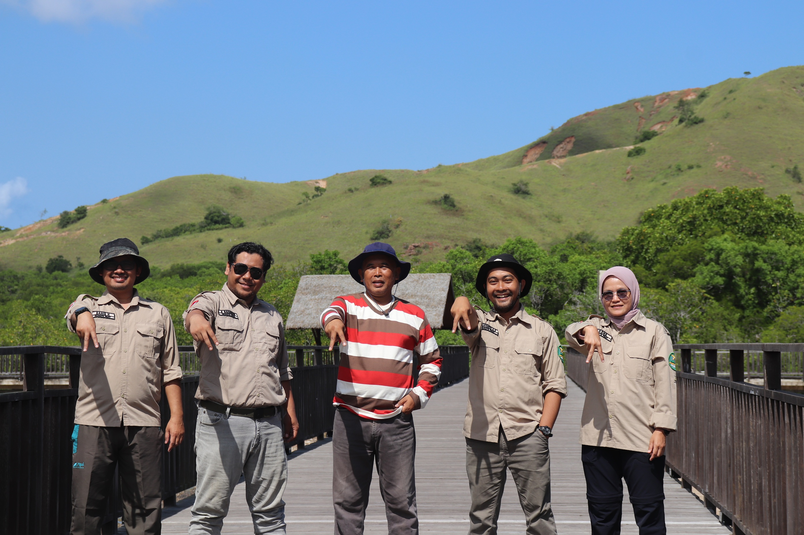

Solusi Geospasial End-to-End
Dari ruang kuliah, ke laboratorium, ke lapangan, hingga ke dashboard pengambil keputusan. Kami menangani seluruh siklus data spasial.

Research & Consultancy
Layanan kajian ilmiah dan konsultansi teknis untuk menjawab pertanyaan strategis: berapa luas deforestasi? Di mana zona rawan longsor? Bagaimana skenario perubahan iklim terhadap daerah aliran sungai? Kami tidak hanya memberikan jawaban, namun juga menyertakan bukti dan dokumentasi yang dapat dipertanggungjawabkan.
Ruang Lingkup
- Penyusunan AMDAL & RKL-RPL
- Pemodelan Tutupan & Alih Fungsi Lahan
- Studi Kelayakan Kawasan Hutan
- Analisis Daya Dukung & Beban Lingkungan
- Perencanaan Wilayah & RTRW Detail
- Evaluasi Penataan Ruang Kawasan
Survey & Mapping
Data spasial yang baik berawal dari survei lapangan yang teliti. Tim survei kami telah bertugas mulai dari hutan Kalimantan, perkebunan di Sumatera, hingga pesisir Papua — membawa total station, GNSS geodetik, dan drone fotogrametri untuk menghasilkan peta dengan tingkat akurasi sentimeter.
Ruang Lingkup
- Survei GNSS RTK & Static
- Total Station & Topografi
- Drone Orthomosaic & DEM
- Survei Inventarisasi Tegakan Hutan
- Ukur Kavling & Batas Wilayah
- Bathimetri & Survei Perairan


Geospatial Training
Kami percaya bahwa data hanya berarti apabila dikelola oleh SDM yang mumpuni. Setiap tahun, ALGM Solutions menyelenggarakan pelatihan untuk lebih dari 250 peserta — mulai dari staf pemerintah daerah, anggota BUMN, hingga mahasiswa yang akan terjun ke dunia kerja.
Modul Pelatihan Unggulan
-
GIS-1
GIS Fundamental & QGIS Mastery (3 hari)Proyeksi, editing, analisis overlay, atlas, hingga pembuatan layout cetak.
-
RS-2
Remote Sensing Lanjutan (4 hari)Pengolahan Sentinel-1/2, Landsat, Supervised Classification, NDVI & indeks spektral.
-
AI-3
Machine Learning untuk Spasial (5 hari)Google Earth Engine, Random Forest, CNN untuk segmentasi citra.
Geoportal Development
Ubah ratusan shapefile dan ribuan baris tabel menjadi sistem informasi yang dapat diakses seluruh pemangku kepentingan. Kami membangun geoportal enterprise mulai dari tata kelola data, pilihan arsitektur server, hingga desain antarmuka yang intuitif untuk pengguna awam.
Stack Teknologi Kami
- PostGISSpatial Database
- GeoServerOGC Server
- LeafletWeb Client
- DjangoCMS / Backend
Instrument Rental
Tidak perlu membeli alat mahal untuk proyek Anda. Sewa peralatan survei dan laboratorium geospasial berkualitas kami, lengkap dengan pendamping teknisi bersertifikat apabila diperlukan. Tersedia untuk sewa harian, mingguan, dan bulanan.
Cek Ketersediaan Alat
Projek dimulai dengan satu percakapan singkat.
Discovery & Scope
Konsultasi awal untuk memahami kebutuhan, tujuan, dan lingkup kerja. Kami kirimkan proposal teknis & penawaran dalam 5 hari kerja.
Perencanaan & Metodologi
Riset pustaka, pemilihan data dasar, penentuan metode (misal: klasifikasi RF vs rule-based), dan penurunan tim survei.
Eksekusi & Quality Control
Pekerjaan lapangan & olah data. Setiap tahap lolos 2 lapis QC internal sebelum sampai ke klien.
Delivery & Support
Penyerahan peta, laporan, dan/atau aplikasi. 30 hari garansi koreksi + opsional pendampingan 6 bulan.
FAQ tentang Layanan Kami
Siap memulai proyek Anda?
Konsultasi awal gratis 30 menit. Sampaikan tujuan proyek Anda — kami akan merekomendasikan kombinasi layanan yang paling efisien.
Konsultasi Sekarang